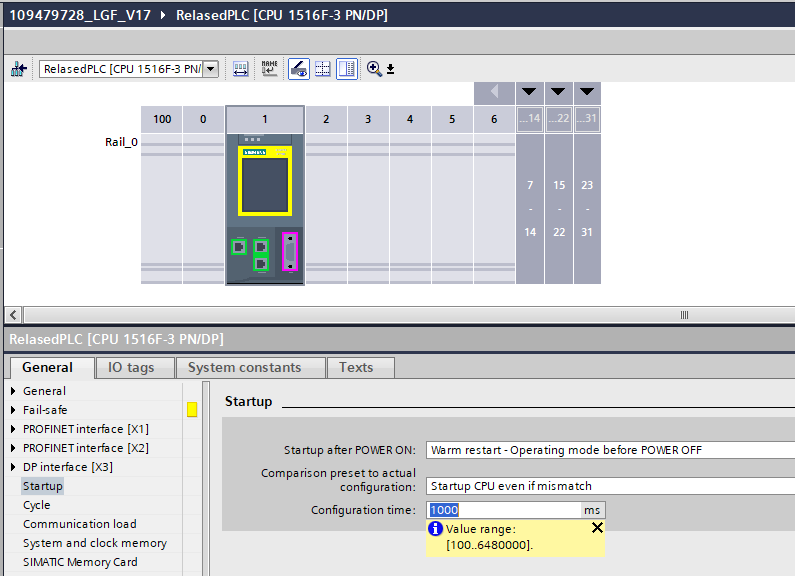

LGF_ActDeactDevice implements a compact state machine to activate or deactivate a decentral device.
| LGF_ActDeactDevice (FB) | ||||||||
|---|---|---|---|---|---|---|---|---|
| Bool | deactivate | done | Bool | |||||
| Bool | activate | busy | Bool | |||||
| HW_DEVICE | hwId | error | Bool | |||||
| LGF_typeActDeactDeviceParameter | parameter | status | Word | |||||
| deactivatingActive | Bool | |||||||
| deactivatingDone | Bool | |||||||
| activatingActive | Bool | |||||||
| activatingDone | Bool | |||||||
| diagnostics | LGF_typeDiagnostics | |||||||
| Identifier | Data type | Default value | Description |
|---|---|---|---|
| deactivate | Bool | FALSE | Rising edge: Deactivate device given by `hwId` |
| activate | Bool | FALSE | Rising edge: Activate device given by `hwId` |
| hwId | HW_DEVICE | --- | Hardware ID of the device which should be activated / deactivated (`Device~PnIf~IODevice`) |
| parameter | LGF_typeActDeactDeviceParameter | --- | Parameter dataset for the function `LGF_ActDeactDevice` |
| Identifier | Data type | Description |
|---|---|---|
| done | Bool | TRUE: Commanded functionality has been completed successfully |
| busy | Bool | TRUE: FB is not finished and new output values can be expected |
| error | Bool | An error occurred during the execution of the FB |
| status | Word | 16#0000 - 16#7FFF: Status of the FB, 16#8000 - 16#FFFF: Error identification |
| deactivatingActive | Bool | TRUE: Deactivating of device active |
| deactivatingDone | Bool | TRUE: Device deactivated |
| activatingActive | Bool | TRUE: Activation of device active |
| activatingDone | Bool | TRUE: Device activated |
| diagnostics | LGF_typeDiagnostics | Diagnostic structure to store and transfer diagnostic information from blocks through the interface. |
| Code / Value | Identifier / Description |
|---|---|
| 16#0000 | STATUS_DEACTIVATION_DONE Device deactivation done |
| 16#0001 | STATUS_ACTIVATION_DONE Device activation done |
| 16#7000 | STATUS_NO_CALL No job being currently processed |
| 16#7040 | STATUS_DEACTIVATION Processing device deactivation |
| 16#7060 | STATUS_ACTIVATION Processing device activation |
| 16#8600 | ERR_UNDEFINED_STATE Error: Due to an undefined state in state machine |
| 16#8601 | ERR_LOG2GEO Error: Log2Geo, may the HW ID for the device is wrong, please see `diagnostics.subFunctionStatus` for more detailed information |
| 16#8602 | ERR_GEO2LOG Error: Geo2Log, may the HW ID for the device is wrong, please see `diagnostics.subFunctionStatus` for more detailed information |
| 16#8640 | ERR_DEVICE_DEACTIVATING Error: Deactivation (D_ACT_DP) of device, please see `diagnostics.subFunctionStatus` for more detailed information |
| 16#8641 | ERR_DEVICE_DEACTIVATING_TIME_OUT Error: Deactivation of device - watchdog time expired |
| 16#8642 | ERR_DEVICE_DEACTIVATING_RETRIES_REACHED Error: Deactivation of device - max retries reached |
| 16#8650 | ERR_READ_ACTIVATION_STATE_WHILE_DEACTIVATED Error: Deactivation state (D_ACT_DP) of device is wrong, desired is `16#0000` or `16#0002`, please see `diagnostics.subFunctionStatus` for more detailed information |
| 16#8660 | ERR_DEVICE_ACTIVATING Error: Activation (D_ACT_DP) of device, please see `diagnostics.subFunctionStatus` for more detailed information |
| 16#8661 | ERR_DEVICE_ACTIVATING_TIME_OUT Error: Activation of device cause watchdog time expired. Can be a broken device connection |
| 16#8662 | ERR_DEVICE_ACTIVATING_RETRIES_REACHED Error: Activation of device cause max retries reached. Can be a broken device connection |
| 16#8663 | ERR_READ_DEVICES_STATES_DURING_ACTIVATION Error: Read Device states (`DeviceStates`) during device activation, please see `diagnostics.subFunctionStatus` for more detailed information |
| 16#8670 | ERR_READ_DEVICES_STATES_WHILE_ACTIVE Error: Read Device states (`DeviceStates`) while device active, please see `diagnostics.subFunctionStatus` for more detailed information |
| 16#8671 | ERR_DEVICE_STATE_WHILE_ACTIVE Error: Device states present error and is unreachable, faulty Device or IO-System |
| 16#8672 | ERR_READ_ACTIVATION_STATE_WHILE_ACTIVE Error: Activation state (`D_ACT_DP`) of device is wrong, desired is `16#0000` or `16#0001`, please see `diagnostics.subFunctionStatus` for more detailed information |
| 16#8690 | ERR_DISABLING_DEACT_DEVICE Error: Deactivation (D_ACT_DP) of device throws an error while disabling, please see `diagnostics.subFunctionStatus` for more detailed information |
| 16#8691 | ERR_DISABLING_WATCHDOG Error: Watchdog timer expired while disabling |
This UDT belongs to the Module LGF_ActDeactDeviceParameter and lists all possible parameters to configure its behavior.
| Identifier | Data type | Default value | Description |
|---|---|---|---|
| activationRetries | SInt | 100 | Number of activation & deactiviation retries until an error is set. |
| timeOutActDeact | Time | T#5S | Time to monitor the commands `activate` and `deactivate` should be greater than the configured `configuration time` in the PLC hardware configuration section `Startup` |
Diagnostic structure to store and transfer diagnostic information from blocks through the interface.
| Identifier | Data type | Default value | Description |
|---|---|---|---|
| status | Word | 16#0000 | Status of the Block or error identification when error occurred |
| subfunctionStatus | Word | 16#0000 | Status or return value of called FB's, FC's and system blocks |
| stateNumber | DInt | 0 | State in the state machine of the block where the error occurred |
The module provides the procedure for activating and deactivating a remote IO-Device in the Profinet (PN, S7-1500 & S7-1200) and Profibus (DP, S7-1500) network.
The activation of the device (defined at hwId) is initiated by a rising edge at activate, after complete activation this is indicated at the output isActivated.
Deactivation of the device (defined at hwId) is initiated by a rising edge at deactivate, after complete activation this is indicated at the output isDeactivated.
timeOutActDeact for monitoring the activation and deactivation sequence should always be set higher than the parameterized value in the Device configuration / Startup / Configuration time.
| Version & Date | Change description | |
|---|---|---|
| 1.0.0 | Simatic Systems Support | |
| 06.04.2024 | First released version in different project | |
| 2.0.0 | Simatic Systems Support | |
| 10.03.2025 | Refactoring & Improve Code for LGF Integration Thats why we start here with V2.0 for the LGF integration Copy of `LGF_ActDeactMonitorDevice` without device monitoring, just executing activation and deactivation | |